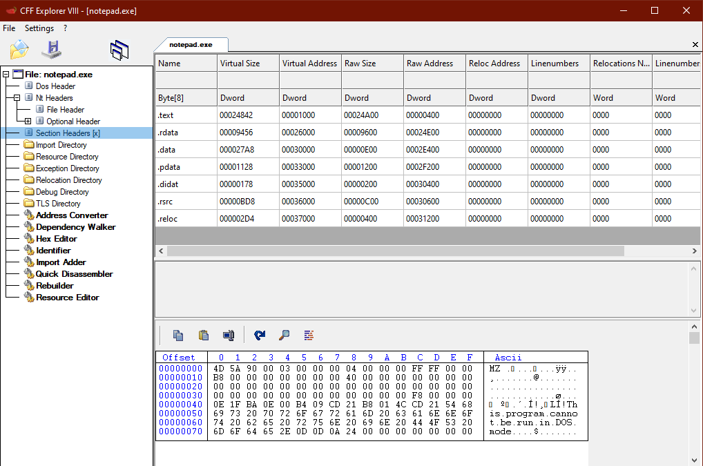

Section Headers
Immediately following the PE Optional Header are the Section Headers.
This portion of the PE file contains a series of IMAGE_SECTION_HEADER structs for each section in the PE file.
• the
.text section will have an IMAGE_SECTION_HEADER struct
• the
.data section will have an IMAGE_SECTION_HEADER struct
• etc.
The IMAGE_SECTION_HEADER struct stores the size and address of the PE section.
https://docs.microsoft.com/en-us/windows/win32/api/winnt/ns-winnt-image_section_headerPIMAGE_DOS_HEADER dos_header = NULL;
PIMAGE_NT_HEADERS pe_header = NULL;
PIMAGE_FILE_HEADER coff_header = NULL;
PIMAGE_SECTION_HEADER section_header = NULL;
dos_header = file_buffer;
pe_header = (PIMAGE_NT_HEADERS)((DWORD_PTR)dos_header + (DWORD_PTR)dos_header->e_lfanew);
coff_header = &pe_header->FileHeader;
pe_optional_header = &pe_header->OptionalHeader;
section_header = IMAGE_FIRST_SECTION(pe_header);
printf("section headers @ 0x%p \n", section_header);
for (int i = 0; i < pe_header->FileHeader.NumberOfSections; i++)
{
printf("\t %s @ 0x%p \n", section_header->Name, section_header);
printf("\t\t size when memory mapped: 0x%x \n", section_header->Misc.VirtualSize);
printf("\t\t address when memory mapped: 0x%x \n", section_header->VirtualAddress);
printf("\t\t size on disk: 0x%x \n", section_header->SizeOfRawData);
printf("\t\t address on disk: 0x%x \n", section_header->PointerToRawData);
printf("\t\t no. of relocations: 0x%x \n", section_header->NumberOfRelocations);
printf("\t\t pointer to relocations: 0x%x \n", section_header->PointerToRelocations);
section_header += 1;
}
### Values of Interest
Misc.PhysicalAddress - apparently this is the file address? (don't know what that means)
- it always seems to be the same value as the size of the section in memory (???)
Misc.VirtualSize - size of section when mapped into memory
VirtualAddress - the offset to the section when loaded into memory, relative to the image base
SizeOfRawData - size of section on disk
PointerToRawData - pointer to start of section on disk
Characteristics - describes whether section is read, read/write, read/write/executable, etc.